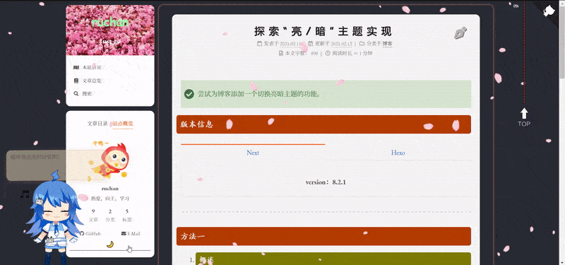

探索“亮/暗”主题实现
尝试为博客添加一个切换亮暗主题的功能。
版本信息
hexo-cli: 3.1.0
方法一
概述
简单的添加一个button按钮，并为按钮以及黑暗模式设计样式，最后加入为按钮的 onclick 事件而设计的 js 代码。
添加 button
button 的位置取决于存在哪个元素对应的 njk 文件中，这里我将 button 放在 sidebar 中。故而先前往 _config.yml 取消 custom_file_path 关于 sidebar.njk 的注释，然后在
站点根目录/source/_data下建立文件 sidebar.njk（已有sidebar.njk 的可忽略此步）。在其中加入：1
2
3
4
5
6<a id="theme_change"
type="button"
onclick="theme_change()"
>
🌞
</a>设计样式
同理取消关于 styles.styl 的注释并建立此文件，并在该文件中加入关于主题切换 button 的样式。
styles.styl 中能加入博客所有元素的样式设计代码。为了方便管理，我这利用 @import 引入绝对路径下的样式代码。
此处的 button 属于自定义内容，故而我在 _data 下创建文件夹 custom，并在其中建立 dark-theme.styl，然后在 styles.styl 文件中加入：
1
2/*自定义主题样式设置*/
@import "custom/dark-theme";最后在 dark-theme.styl 中加入：
1
2
3
4// 黑暗主题样式
body.dark-theme {
background: #282c34 /* 设置黑暗主题背景颜色 */
}这里我添加的 button 属于超链接（
<a></a>），若利用<button></button>，还能在 dark-theme.styl 中设计 button 元素的样式，详情见此文。添加 JS
由
onclick="theme_change()"可知当我们点击 🌞 这个 button 时，会执行theme_change()这个函数。所以设计并添加theme_change()：建立source/js/theme_change.js文件，在 theme_change.js 中设计theme_change()，最后引入 theme_change.js 。具体如下：1
2
3
4
5
6
7
8
9
10
11
12
13
14
15// source/js/theme_change.js
// 主题切换功能
function theme_change() {
// 切换字内容
var button = document.getElementById('theme_change');
var pattern = new RegExp('🌞', 'i');
if (pattern.test(button.innerHTML)){
button.innerHTML = "🌙";
} else{
button.innerHTML = "🌞";
}
// 切换主题
document.body.classList.toggle('dark-theme');
setCookie("inner",button.innerHTML,1)
};同前所述，取消 footer.njk 的注释，并建立
source/_data/footer.njk（此文件以及 body-end.njk 均被我用作引入 js）。footer.njk 中加入：1
2{# 自定义黑暗主题切换 #}
<script type="text/javascript" src="/js/theme_change.js"></script>至此已完成，效果如下：
